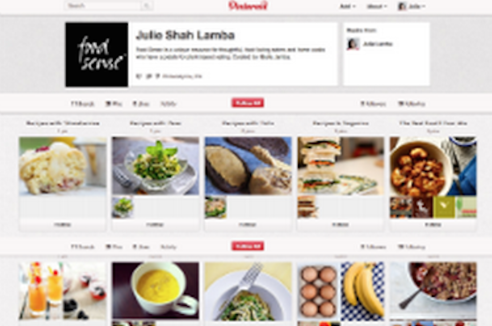

Taskmakers
Feast your eyes & get recipes!Blog
News, how-tos, stories, and moreThe A-List
Handpicked, absolute favoritesContirbute
We want to hear from you!Sign up for our newsletter to receive a handpicked selection of the best stories, recipes, and news, delivered weekly to your inbox.
-
 2012's Best Summer Cookbooks
2012's Best Summer Cookbooks
With the best of the season coming from "orchards, farms and gardens," NPR has put together an impressive collection of 10 summer cookbooks.
May 23, 2012 / Read ⇒ -
How to Make Vegetable Chips
About a month age, I ate almost an entire box of kale chips. My brother and I were visiting our cousin in Brooklyn, and before a very thoughtfully prepared vegan...
May 17, 2012 / Read ⇒ -

Join us on Pinterest!
If I could curate a cookbook for you, this would be it.
May 16, 2012 / Read ⇒ -
Recipes from a Sunday Supper
I could not figure out what to do with the delectable slices of Pear Cake that I brought home from this wonderful Sunday supper - eat them slowly, a little bit at...
May 15, 2012 / Read ⇒